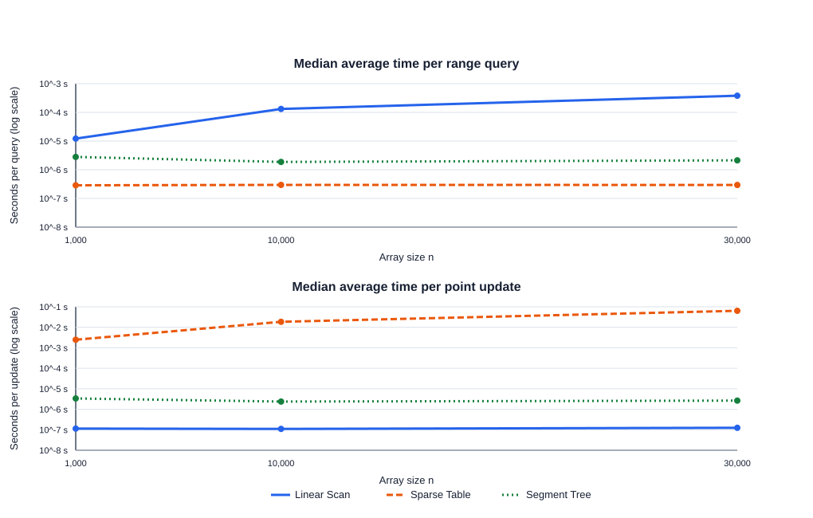

1 · Linear scan
Query O(n) · Update O(1)
Simple reference solution; suitable for tiny data or few queries.
Case Study No. 02 · Segment Trees & Sparse Tables
A road-quality monitor stores a score for every road segment. It needs to find the lowest score within a chosen range and reflect new inspection results as they arrive.
[left, right].Prepared by:
Daksh Srivastava · Prathamesh More · Yuvraj Mishra · Biswajeet Rout · Sumit Shingole
The approaches
Query O(n) · Update O(1)
Simple reference solution; suitable for tiny data or few queries.
Query O(1) · Update O(n log n)*
Fast for static data; this version rebuilds after a change.
Query O(log n) · Update O(log n)
Balanced option when queries and point updates both matter.
Experimental evidence
| Array size | Linear query | Sparse query | Tree query |
|---|---|---|---|
| 1,000 | 12.163 µs | 0.283 µs | 1.329 µs |
| 10,000 | 128.625 µs | 0.312 µs | 1.943 µs |
| 30,000 | 422.677 µs | 0.345 µs | 3.711 µs |
At 30,000 values: sparse-table update averaged 70.728 ms; segment-tree update averaged 2.996 µs.
Same deterministic values and mixed short, medium, and broad ranges. Median timings on Python 3.9.6 / macOS arm64; timing varies by system.

Conclusion and validation
Why: both range queries and point updates take O(log n), it uses O(n) storage, and it avoids a full-table rebuild.
Choose differently when: data is static and queries dominate (sparse table), or data is tiny and simplicity matters most (linear scan).
Correctness evidence: all three implementations pass boundary, invalid-input, negative/duplicate, non-power-of-two, update, and randomized tests. The benchmark checks answers against direct minima before timing.